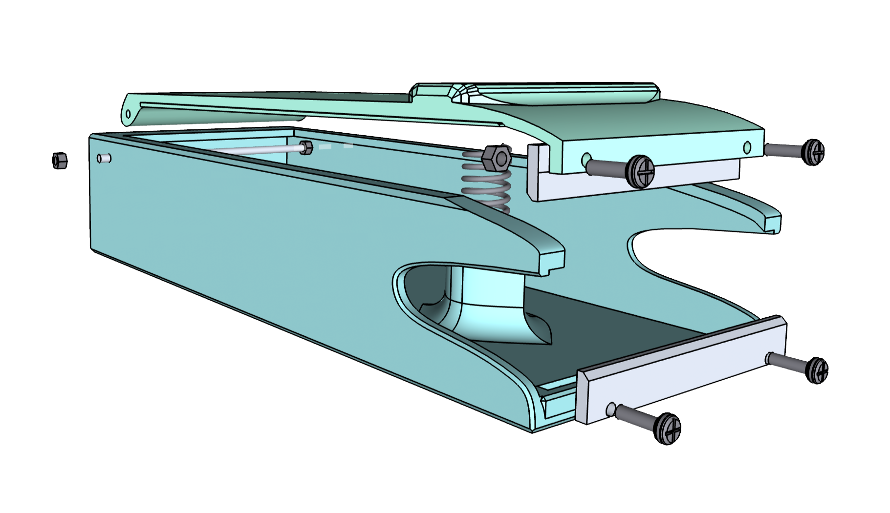
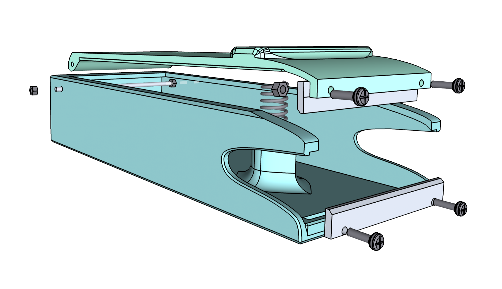

Modelling: A Small City Used for DND
I really enjoyed playing DND games with my friends with our own stories!
One of the by-products of my stories is this model of a imaginary city, created in 2021.
As shown below, the fancy yellow building is ought to be a small museum.
I like this small design and, therefore, one of my milestones of 3D modelling is:
To expand this city and add MORE details to it!


 
